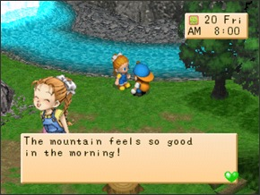
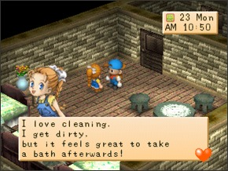
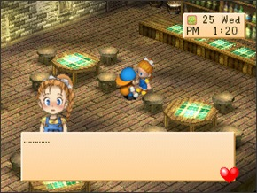

ANN    Neste videogame Ann é um tanto de uma menina moleca e ela ama animais. Ela é doce, gentil e bastante saidinha. Ela perdeu sua mãe na juventude e ela atualmente ajuda seu pai na hospedaria(INN). Ela também aprecia cozinhar. Aniversário: 17 de verão Aniversário alternativo: 22 de verão (Se seu aniversário cai em 17 de verão então mudará para 22 de verão) CRONOGRAMA Dia Hora Local Todo dia 6:00am a 7:00am Dentro da hospedaria(INN) Todo dia 7:30am a 10:00am Na fonte termal(Hot Springs) Todo dia 10:30am a 1:00pm Dentro da hospedaria(INN) Todo dia 1:00pm a 4:00pm Dentro da hospedaria(INN) Todo dia 4:00pm a 7:00pm Dentro da hospedaria(INN) Todo dia 7:00pm a 12:00am Dentro da hospedaria(INN) Todo dia (Se está chovendo) 6:00am a 7:00am Dentro da hospedaria(INN) Todo dia (Se está chovendo) 7:30am a 10:00am No quarto dos fundos da hospedaria(INN) Todo dia (Se está chovendo) 10:00am a 1:00pm Dentro da hospedaria(INN) Todo dia (Se está chovendo) 1:00pm a 4:00pm Dentro da hospedaria(INN) Todo dia (Se está chovendo) 4:00pm a 7:00pm Dentro da hospedaria(INN) Todo dia (Se está chovendo) 7:00pm a 12:00am Dentro da hospedaria(INN) ᐅProvavelmente o modo mais fácil de Ann gostar de você neste videogame é levar um monte de ovos para as fontes termais toda manhã e virar em Ovos cozidos do spa. Ann está nas manhãs próximo a cachoeira da deusa então você pode dar a ela bem ali. O que Ann gosta e não gosta Adora Torta de Maçã(Apple pie), Arroz de bambu(Bamboo rice), Bolo(Cake), Bolo de Queijo(Cheesecake), Fondue de Queijo(Cheese fondue), Chocolate, Bolo de chocolate(Chocolate cake), Curry, Macarrão frito(Fried Noodles), Arroz frito(Fried Rice), Peixe grelhado(Grilled Fish, ), Sorvete(Ice cream), Arroz de Cogumelo(Mushroom Rice), Omelete(Omelet), Pudim de Abobora(Pumpkin Pudim), Omelete de arroz(Rice omelet), Batatas torradas(Rosated Potatoes) Salada(Salad), Sandwich, Ovo cozido(Boiled egg) do Spa, Bobó(Stew), Fritada(Stir fry), Leite de Morango(Strawberry), Sushi, Macarrão com tempura(Tempura noodles), Arroz de Trufa(Truffle rice) e Panqueca Vegetariana(Veggie Pancake) Gosta Maçã(Apple), Curativo(Bandage), Ovo cozido(Boiled egg), Pão(Bread), Queijo(Cheese), Chirashi Sushi, Biscoito de chocolate(Chocolate cookie) Cookies, Pão francês (Dinner rool), Ovo(Egg), Batata frita(Fries) Suco de fruta(Fruit Juice), Latte de fruta(Fruit latte), Suco de uva(Grape juice), Vegetais(Greens), Ovo de ouro(Gold Egg), Berinjela feliz(Happy Eggplant), Pão com geleia(Jam Bun), Joalheria(Jewerly), Receita ketchup, Peixe grande(Large fish), Leite(Milk), Sopa de missô(Miso soup), Suco misto(Mixed Juice), Latte misto(Mixed latte), Macarrão(Noodles), Nabos em conserva(Pickled turnips), Picles(Pickles), Abacaxi(Pineapple), Pizza, Pipoca(Popcorn), Pão de passas (Raisin Bread), Chá relaxante(Relaxation Tea), Bolinho de arroz(Rice ball), Sashimi, Ovos mexidos(Scrambled eggs), Morango(Strawberry), Geleia de Morango(Strawberry), SUGDW Maçã(Apple), Batata doce(Sweet Potato) (prato)(Sweet Potato(dish)), Tempura, Tomate, Suco de tomate(Tomato juice), Latte vegetariano(Veggie latte), Suco de Vegetais(Greens)(Vegetable Juice) e Uva silvestre(Wild grape) Neutro Adamantite, Geleia de Maçã(Apple jam), Broto de bambu(Bamboo shoot), Flor vermelha mágica azul(Blue Magic Red Flower), Manteiga(Butter), Repolho(Cabbage), Cenoura(Carrot), milho(Corn), Pepino(Cucumber), Curry em pó(Curry Powder), Berinjela(Eggplant), Farinha(Flour), Geleia de uva(Grape Jam), Pimenta verde(Green Pepper), Mel(Honey), Leite quente(Hot Milk), Ketchup, Maionese(Mayonnaise), Flor de amendoeira(Moondrop Flower), Cogumelo(Mushroom), Óleo(Oil), Cebola(Onion), Taça de laranja(Orange cup fruit), Flor do gato rosa(Pink cat flower), Batata(Potato), Abobora(Pumpkin), Flor vermelha da magia vermelha(Red magic red flower), Folhas de chá relaxantes(Relaxation tea leaves), Espinafre(Spinach), Batata doce(Sweet Potato), Flor da brincadeira(Toy flower), Trufa(Truffle), Nabo(Turnip), Vinho(Wine), Lã(Wool) e Bola de novelo(Yarn ball) Não Gosta Erva Azul(Blue grass), Bodigizer, Bodigizer XL, Galho(Branch), Um fiasco de comida(Food fiasco), Erva verde(Green grass), Madeira(Lumber), Medium Fish, Peixe pequeno(Small fish), Turbojolt, Turbojolt XL, Galho de inverno(Winter Branch) e Madeira de inverno(Winter lumber) Odeia Ração de galinha(Chicken feed), Minério de cobre(Copper ore), Erva seca(Dead weeds), Comida de peixe(Fish food), Forragem(Fodder), Receita de batata frita (fries recipe), Lixo(Garbage), Minério de ouro(Gold ore), Mystrile, Orichalc, Cogumelo Venenoso(Mushroom Poisonous), Erva vermelha(Red grass) Minério de prata(Silver ore), Pedra(Stone), Ervas(Weed) e Pedra de inverno (Winter Stone) Rival Seu rival para Ann neste jogo é Cliff. Se você quiser ver eles dois se casarem então é muito importante que Cliff não deixe o vilarejo. No seu primeiro outono quando é dado a você um convite para ir trabalhar no vinhedo você deve chamar Cliff e contar a ele sobre o trabalho. Vocês dois trabalharão lá, fazer algum dinheiro e Cliff ficará no vilarejo. Olá! Bem-Vindo!